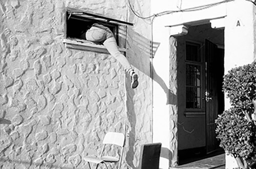
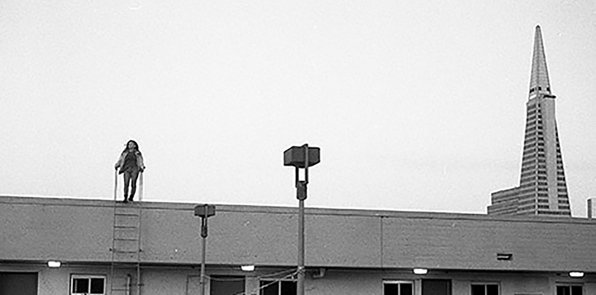
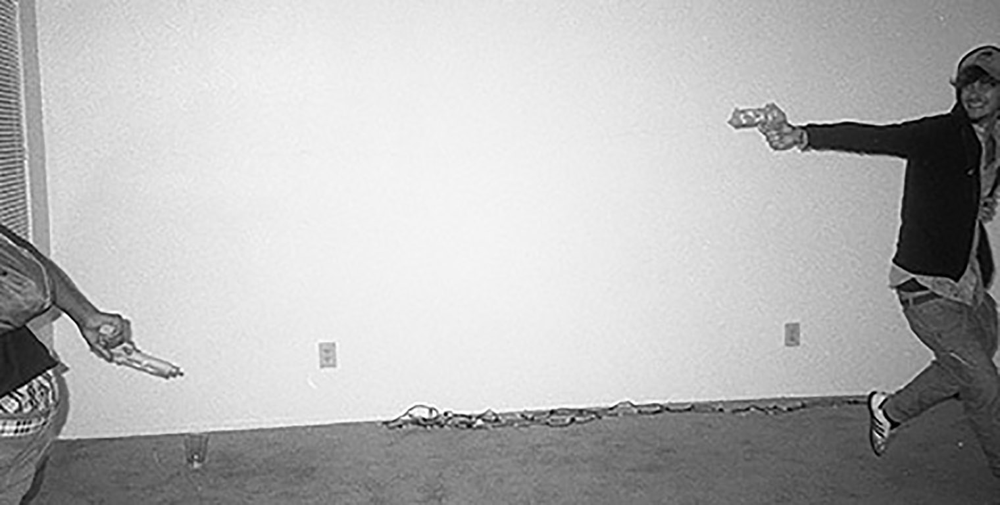

KATIE WALSH
21. Bay Area. SJSU BFA. Photography.
"I'm most interested in finding the strangeness and irony in reality. That's my forte."
- Mary Ellen Mark
ARCHIVE

San Jose, 2015

San Fracisco, 2016

San Francisco, 2016

Oakland, 2016

Pacifica, 2016

Santa Barbara, 2015